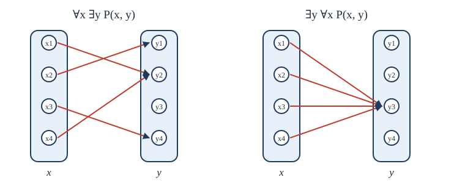

Chapter 2: Predicate Logic and Quantifiers¶
Saying "for all" and "there exists" precisely
Learning outcomes
After this chapter you should be able to:
- explain what a predicate is and how it becomes a proposition when its variables are given values or bound by quantifiers;
- read and write statements with the universal quantifier \(\forall\) and the existential quantifier \(\exists\), over a stated domain;
- negate quantified statements correctly, including statements with several quantifiers;
- translate English sentences that contain "all", "some", "every", "no" and "only" into predicate logic, and back;
- explain why the order of nested quantifiers matters, with examples;
- use the rules of instantiation and generalisation to reason with quantified statements.
2.1 Predicates¶
Propositional logic cannot express the simplest piece of mathematical reasoning: "Every prime greater than 2 is odd; 7 is a prime greater than 2; so 7 is odd." To propositional logic the three sentences are just \(p\), \(q\), \(r\), unrelated. What links them is that they talk about objects (numbers) and properties of objects (being prime, being odd). Predicate logic gives us a way to talk about both.
Definition: predicate
A predicate (or propositional function) is a statement \(P(x_1, \dots, x_n)\) containing variables, which becomes a proposition when every variable is given a value from a specified set, the domain (or universe of discourse).
Let \(P(x)\) be "\(x > 3\)". Then \(P(x)\) is not a proposition, but \(P(5)\) ("\(5 > 3\)", true) and \(P(2)\) ("\(2 > 3\)", false) are. A predicate can have several variables: let \(Q(x, y)\) be "\(x + y = 10\)"; then \(Q(3, 7)\) is true and \(Q(1, 1)\) is false.
Predicates appear everywhere in computing. The condition of an if statement is a predicate of the program's variables. A precondition of a function is a predicate that must hold of its inputs, and a postcondition is a predicate that holds of its outputs. A database query such as "find all employees whose salary exceeds 50,000" selects the records that make a predicate true.
2.2 Quantifiers¶
Giving a variable a value is one way to make a predicate into a proposition. The other is to quantify it: to say how many values of the variable make the predicate true.
Definition: the universal quantifier
The universal quantification of \(P(x)\) is the proposition "\(P(x)\) is true for every \(x\) in the domain", written \(\forall x\, P(x)\) and read "for all \(x\), \(P(x)\)". It is true if \(P(x)\) is true for every element of the domain, and false if there is at least one element \(c\) with \(P(c)\) false. Such an element is a counterexample.
Definition: the existential quantifier
The existential quantification of \(P(x)\) is the proposition "there is an element \(x\) in the domain such that \(P(x)\)", written \(\exists x\, P(x)\). It is true if \(P(c)\) is true for at least one \(c\) in the domain, and false if \(P(x)\) is false for every \(x\).
The truth of a quantified statement depends on the domain, so the domain must always be stated or clear from the context.
Example 2.1: The domain matters
Problem. Let \(P(x)\) be "\(x^2 \ge x\)". Decide the truth of \(\forall x\, P(x)\) when the domain is (a) the integers, (b) the real numbers.
Solution. (a) For an integer \(x\), either \(x \le 0\), in which case \(x^2 \ge 0 \ge x\), or \(x \ge 1\), in which case \(x^2 = x \cdot x \ge 1 \cdot x = x\). So \(\forall x\, P(x)\) is true over \(\mathbb{Z}\). (b) Over \(\mathbb{R}\) it is false: \(x = \tfrac{1}{2}\) gives \(x^2 = \tfrac{1}{4} < \tfrac{1}{2}\). One counterexample is enough.
When the domain is finite, say \(\{x_1, x_2, \dots, x_n\}\), the quantifiers are just long conjunctions and disjunctions:
This is the best way to remember what the quantifiers mean, and it is exactly how a program checks them: a loop that returns false at the first failure checks \(\forall\), and a loop that returns true at the first success checks \(\exists\). Python has both built in.
data = [4, 8, 15, 16, 23, 42]
print(all(x > 0 for x in data)) # for all x, x > 0 -> True
print(any(x % 2 == 1 for x in data)) # there is an odd x -> True
print(all(x % 2 == 0 for x in data)) # every x is even -> False (15 is a counterexample)
Uniqueness, and the empty domain¶
The uniqueness quantifier \(\exists! x\, P(x)\) says "there is exactly one \(x\) such that \(P(x)\)". It can be written with the ordinary quantifiers:
Over the integers, \(\exists! x\, (x + 3 = 5)\) is true, and \(\exists! x\, (x^2 = 4)\) is false (both \(2\) and \(-2\) work).
If the domain is empty, \(\forall x\, P(x)\) is true (vacuously: there is no counterexample) and \(\exists x\, P(x)\) is false. "Every unicorn in this room is purple" is true, because there are no unicorns in the room.
Binding and scope¶
A variable that is quantified is bound; one that is not is free. In \(\exists x\, (x + y = 5)\), the variable \(x\) is bound and \(y\) is free, so the expression is a predicate in \(y\), not a proposition. A formula all of whose variables are bound is a proposition. The scope of a quantifier is the part of the formula it applies to. Quantifiers have higher precedence than the connectives, so \(\forall x\, P(x) \vee Q(x)\) means \((\forall x\, P(x)) \vee Q(x)\), in which the last \(x\) is free. Write \(\forall x\, (P(x) \vee Q(x))\) if that is what you mean.
2.3 Negating quantified statements¶
What is the negation of "every student in the class has a phone"? It is not "no student has a phone". It is "not every student has a phone", which means "some student does not have a phone". In symbols:
Key idea: De Morgan's laws for quantifiers
To negate a quantified statement, flip each quantifier (\(\forall \leftrightarrow \exists\)) and push the negation inward.
Over a finite domain these are exactly De Morgan's laws of Chapter 1: \(\neg(P(x_1) \wedge \dots \wedge P(x_n)) \equiv \neg P(x_1) \vee \dots \vee \neg P(x_n)\). For an infinite domain we argue directly. \(\neg\forall x\, P(x)\) is true precisely when \(P(x)\) fails for at least one \(x\), which is precisely when \(\exists x\, \neg P(x)\) is true. The second law follows in the same way.
| Statement | Negation | When is the negation true? |
|---|---|---|
| \(\forall x\, P(x)\) | \(\exists x\, \neg P(x)\) | there is an \(x\) for which \(P(x)\) is false |
| \(\exists x\, P(x)\) | \(\forall x\, \neg P(x)\) | \(P(x)\) is false for every \(x\) |
Table 2.1. Negating the quantifiers.
Example 2.2: Negations
Problem. Negate, and simplify so that no negation stands in front of a quantifier: (a) \(\forall x\, (x^2 > x)\); (b) \(\exists x\, (x^2 = 2)\); (c) "Every program has a bug."
Solution. (a) \(\neg\forall x\, (x^2 > x) \equiv \exists x\, \neg(x^2 > x) \equiv \exists x\, (x^2 \le x)\). (b) \(\forall x\, (x^2 \ne 2)\). (c) "Some program has no bug."
2.4 Translating English¶
English expresses quantifiers in many ways: "all", "every", "each", "any" for \(\forall\); "some", "there is", "at least one", "a" for \(\exists\); "no", "none" for \(\forall \dots \neg\). The difficult part is that English usually restricts the quantifier to part of the domain, as in "every student ..." or "some prime ...". There are two patterns, and they are different.
Key idea: restricted quantifiers
"Every \(P\) is \(Q\)" is \(\forall x\, (P(x) \to Q(x))\).
"Some \(P\) is \(Q\)" is \(\exists x\, (P(x) \wedge Q(x))\).
Do not swap the patterns
\(\forall x\, (P(x) \wedge Q(x))\) says that everything is both \(P\) and \(Q\), which is far stronger than "every \(P\) is \(Q\)". And \(\exists x\, (P(x) \to Q(x))\) is true as soon as there is a single \(x\) that is not \(P\) (a false hypothesis makes the conditional true), so it says almost nothing. Use \(\to\) with \(\forall\) and \(\wedge\) with \(\exists\).
Example 2.3: Restricted quantifiers
Problem. The domain is all people. Let \(S(x)\) be "\(x\) is a student in this class", \(C(x)\) be "\(x\) has studied calculus" and \(J(x)\) be "\(x\) knows Java". Translate: (a) Every student in this class has studied calculus. (b) Some student in this class knows Java. (c) No student in this class knows Java. (d) Not every student in this class has studied calculus.
Solution.
- \(\forall x\, (S(x) \to C(x))\).
- \(\exists x\, (S(x) \wedge J(x))\).
- \(\forall x\, (S(x) \to \neg J(x))\), or equivalently \(\neg \exists x\, (S(x) \wedge J(x))\).
- \(\neg\forall x\, (S(x) \to C(x)) \equiv \exists x\, \neg(S(x) \to C(x)) \equiv \exists x\, (S(x) \wedge \neg C(x))\): some student has not studied calculus.
Part (d) shows the patterns are consistent: negating a restricted "every" gives a restricted "some", with the conditional turning into a conjunction just as \(\neg(p \to q) \equiv p \wedge \neg q\).
Mathematics often writes a restricted quantifier with the restriction under or beside the symbol: \(\forall x > 0\; P(x)\) means \(\forall x\, (x > 0 \to P(x))\), and \(\exists x \in A\; P(x)\) means \(\exists x\, (x \in A \wedge P(x))\).
Aristotle's syllogisms¶
Logic began with arguments of exactly this shape. The classical syllogism "All humans are mortal; Socrates is human; therefore Socrates is mortal" is, in predicate logic, the premises \(\forall x\, (H(x) \to M(x))\) and \(H(s)\), with conclusion \(M(s)\). Section 2.6 shows how to prove that such an argument is valid.
2.5 Nested quantifiers¶
Most mathematical statements have more than one quantifier. "Every integer has an additive inverse" is
with domain \(\mathbb{Z}\) for both variables. Read nested quantifiers from left to right, like nested loops: for every \(x\), there is a \(y\) (which may depend on \(x\)) with \(x + y = 0\). True: take \(y = -x\).
Key idea: the order of different quantifiers matters
Quantifiers of the same kind can be swapped: \(\forall x\, \forall y\, P(x, y) \equiv \forall y\, \forall x\, P(x, y)\), and similarly for \(\exists\). Quantifiers of different kinds cannot: \(\forall x\, \exists y\, P(x, y)\) and \(\exists y\, \forall x\, P(x, y)\) usually say different things.
Swap the quantifiers in the inverse example and you get \(\exists y\, \forall x\, (x + y = 0)\): there is a single integer \(y\) that is the inverse of every \(x\). That is false. In \(\forall x\, \exists y\), the \(y\) may change with \(x\); in \(\exists y\, \forall x\), one \(y\) must serve every \(x\). Figure 2.1 shows the difference with arrows from each \(x\) to a \(y\) that works for it.

The statement \(\exists y\, \forall x\, P(x, y)\) always implies \(\forall x\, \exists y\, P(x, y)\) (if one \(y\) works for every \(x\), then certainly each \(x\) has a \(y\)), but not the other way round.
| Statement | When true | When false |
|---|---|---|
| \(\forall x\, \forall y\, P(x,y)\) | \(P(x,y)\) holds for every pair | some pair fails |
| \(\forall x\, \exists y\, P(x,y)\) | every \(x\) has a partner \(y\) | some \(x\) has no partner |
| \(\exists x\, \forall y\, P(x,y)\) | one \(x\) works with every \(y\) | every \(x\) fails with some \(y\) |
| \(\exists x\, \exists y\, P(x,y)\) | at least one pair works | no pair works |
Table 2.2. The four ways of quantifying a predicate of two variables.
Example 2.4: Reading nested quantifiers
Problem. The domain of every variable is \(\mathbb{R}\). Which are true? (a) \(\forall x\, \exists y\, (y > x)\). (b) \(\exists y\, \forall x\, (y > x)\). (c) \(\forall x\, \exists y\, (xy = 1)\). (d) \(\exists x\, \forall y\, (xy = 0)\).
Solution.
- True: for any \(x\), take \(y = x + 1\). There is no largest real number.
- False: it would say some real number is larger than every real number, including itself.
- False: \(x = 0\) is a counterexample, since \(0 \cdot y = 0 \ne 1\) for every \(y\).
- True: take \(x = 0\).
Negating nested quantifiers¶
Negating a statement with several quantifiers is done by applying De Morgan's laws for quantifiers again and again, moving the negation one quantifier to the right at each step.
Example 2.5: The definition of a limit
Problem. A sequence \(a_1, a_2, \dots\) of real numbers converges to \(L\) if
Write the statement that the sequence does not converge to \(L\).
Solution. Flip each quantifier and negate the predicate at the end:
In words: there is some tolerance \(\varepsilon\) such that, however far out you go, some later term is at least \(\varepsilon\) away from \(L\). The restrictions \(\varepsilon > 0\) and \(n > N\) stay as they are; only the quantifiers flip.
Example 2.6: Translating with two variables
Problem. Let \(L(x, y)\) be "\(x\) loves \(y\)", over the domain of all people. Translate: (a) Everybody loves somebody. (b) There is somebody whom everybody loves. (c) Nobody loves everybody. (d) Everybody loves themselves.
Solution.
- \(\forall x\, \exists y\, L(x, y)\).
- \(\exists y\, \forall x\, L(x, y)\).
- \(\neg \exists x\, \forall y\, L(x, y) \equiv \forall x\, \exists y\, \neg L(x, y)\): everyone fails to love somebody.
- \(\forall x\, L(x, x)\).
2.6 Reasoning with quantifiers¶
The rules of inference of Chapter 1 still hold. Four more rules let us remove and introduce quantifiers.
| Rule | From | Conclude | Condition |
|---|---|---|---|
| Universal instantiation | \(\forall x\, P(x)\) | \(P(c)\) | \(c\) is any element of the domain |
| Universal generalisation | \(P(c)\) | \(\forall x\, P(x)\) | \(c\) was an arbitrary element: nothing was assumed about it |
| Existential instantiation | \(\exists x\, P(x)\) | \(P(c)\) | \(c\) is a new name for an element that has the property |
| Existential generalisation | \(P(c)\) | \(\exists x\, P(x)\) | \(c\) is some element of the domain |
Table 2.3. Rules of inference for quantified statements.
Universal generalisation is the rule behind every proof that begins "Let \(x\) be an arbitrary integer." If we prove \(P(x)\) using only what is true of every integer, the proof works for each integer, so \(\forall x\, P(x)\) holds. The condition matters: we cannot prove "every integer is even" by checking that \(4\) is even.
Combining universal instantiation with modus ponens gives the rule used most often in practice:
Universal modus ponens
From \(\forall x\, (P(x) \to Q(x))\) and \(P(a)\), where \(a\) is an element of the domain, conclude \(Q(a)\).
Example 2.7: A formal argument with quantifiers
Problem. Show that the premises "Every student in this class has read the book" and "Priya is a student in this class" imply "Someone who has read the book is in this class".
Solution. Let \(S(x)\) be "\(x\) is in this class" and \(B(x)\) be "\(x\) has read the book". The premises are \(\forall x\, (S(x) \to B(x))\) and \(S(p)\); the conclusion is \(\exists x\, (B(x) \wedge S(x))\).
| Step | Statement | Reason |
|---|---|---|
| 1 | \(\forall x\, (S(x) \to B(x))\) | premise |
| 2 | \(S(p) \to B(p)\) | universal instantiation, 1 |
| 3 | \(S(p)\) | premise |
| 4 | \(B(p)\) | modus ponens, 2, 3 |
| 5 | \(B(p) \wedge S(p)\) | conjunction, 4, 3 |
| 6 | \(\exists x\, (B(x) \wedge S(x))\) | existential generalisation, 5 |
Existential instantiation needs a fresh name
From \(\exists x\, P(x)\) and \(\exists x\, Q(x)\) you may not conclude \(P(c) \wedge Q(c)\) for one \(c\). "Some integer is even" and "some integer is odd" are both true, but no integer is both. Each use of existential instantiation must introduce a name that has not been used before.
Logic programming¶
The language Prolog is predicate logic made executable. A program is a list of facts such as parent(asha, ravi). and rules such as grandparent(X, Z) :- parent(X, Y), parent(Y, Z)., which says \(\forall x\, \forall y\, \forall z\, \bigl(\mathit{parent}(x,y) \wedge \mathit{parent}(y,z) \to \mathit{grandparent}(x,z)\bigr)\). Asked a query such as grandparent(asha, W), the system searches for values that make it follow from the facts and rules, using universal instantiation and resolution.
2.7 Summary¶
Summary
- A predicate \(P(x)\) becomes a proposition when \(x\) is given a value or is bound by a quantifier. Always state the domain.
- \(\forall x\, P(x)\) is true when \(P\) holds for every element; one counterexample makes it false. \(\exists x\, P(x)\) is true when \(P\) holds for at least one element.
- Over a finite domain, \(\forall\) is a big \(\wedge\) and \(\exists\) is a big \(\vee\).
- Negation: \(\neg\forall x\, P(x) \equiv \exists x\, \neg P(x)\) and \(\neg\exists x\, P(x) \equiv \forall x\, \neg P(x)\).
- "Every \(P\) is \(Q\)" is \(\forall x\, (P(x) \to Q(x))\); "some \(P\) is \(Q\)" is \(\exists x\, (P(x) \wedge Q(x))\).
- The order of different quantifiers matters: \(\exists y\, \forall x\, P(x, y)\) implies \(\forall x\, \exists y\, P(x, y)\), but not conversely.
- Universal and existential instantiation and generalisation extend the rules of inference to quantified statements.
2.8 Exercises¶
Exercise 1
Let \(P(x)\) be "\(x\) is divisible by 4" and \(Q(x)\) be "\(x\) is even", over the domain \(\mathbb{Z}\). Give the truth value of (a) \(\forall x\, (P(x) \to Q(x))\), (b) \(\forall x\, (Q(x) \to P(x))\), (c) \(\exists x\, (Q(x) \wedge \neg P(x))\).
Answer
(a) True: a multiple of 4 is \(4k = 2(2k)\), even. (b) False: \(x = 2\). (c) True: \(x = 2\) again.
Exercise 2
Negate each statement and simplify: (a) \(\forall x\, \exists y\, (x < y)\); (b) \(\exists x\, \forall y\, (x \le y)\); (c) \(\forall x\, (P(x) \to Q(x))\).
Answer
(a) \(\exists x\, \forall y\, (x \ge y)\). (b) \(\forall x\, \exists y\, (x > y)\). (c) \(\exists x\, (P(x) \wedge \neg Q(x))\).
Exercise 3
Over the domain \(\mathbb{N} = \{0, 1, 2, \dots\}\), which of the statements in Exercise 2 (before negation) are true?
Answer
(a) True: take \(y = x + 1\). (b) True: \(x = 0\) satisfies \(0 \le y\) for every natural number \(y\). Over \(\mathbb{Z}\), (b) would be false, since there is no smallest integer. (c) depends on \(P\) and \(Q\).
Exercise 4
Translate into predicate logic, with the domain all animals and \(B(x)\) "\(x\) is a bird", \(F(x)\) "\(x\) can fly": (a) Not all birds can fly. (b) Only birds can fly. (c) Some animals that can fly are not birds.
Answer
(a) \(\neg\forall x\, (B(x) \to F(x))\), equivalently \(\exists x\, (B(x) \wedge \neg F(x))\). (b) "Only birds can fly" means "if it can fly, it is a bird": \(\forall x\, (F(x) \to B(x))\). (c) \(\exists x\, (F(x) \wedge \neg B(x))\). Statements (b) and (c) are negations of each other.
Exercise 5
Let \(M(x, y)\) be "\(x\) has sent a message to \(y\)", over the people in a group. Express: (a) Someone has sent a message to everyone. (b) Everyone has received a message from someone. (c) There is a person who has sent no messages.
Answer
(a) \(\exists x\, \forall y\, M(x, y)\). (b) \(\forall y\, \exists x\, M(x, y)\). (c) \(\exists x\, \forall y\, \neg M(x, y)\).
Exercise 6
Give a domain and a predicate \(P(x, y)\) for which \(\forall x\, \exists y\, P(x, y)\) is true but \(\exists y\, \forall x\, P(x, y)\) is false.
Answer
Domain \(\mathbb{Z}\) and \(P(x, y)\): "\(y > x\)". Every integer has a larger one, but no integer is larger than all integers. Another: people and "\(y\) is the mother of \(x\)".
Exercise 7
Express "there are at least two elements \(x\) with \(P(x)\)" and "there are exactly two" using only \(\forall\), \(\exists\), \(=\) and the connectives.
Answer
At least two: \(\exists x\, \exists y\, (x \ne y \wedge P(x) \wedge P(y))\). Exactly two: \(\exists x\, \exists y\, \bigl(x \ne y \wedge P(x) \wedge P(y) \wedge \forall z\, (P(z) \to (z = x \vee z = y))\bigr)\).
Exercise 8
What is wrong with this argument? "Some numbers are prime. Some numbers are even. So, by existential instantiation, some number \(c\) is prime and even." (The conclusion happens to be true: why is the argument still wrong?)
Answer
Existential instantiation was used twice with the same name \(c\). The first premise gives some \(c\) that is prime; the second gives some \(d\), possibly different, that is even. The same argument form would prove "some number is even and odd", which is false. A true conclusion does not make an invalid argument valid.
Exercise 9
Show that "All lions are fierce. Some lions do not drink coffee. Therefore some fierce creatures do not drink coffee" is valid.
Answer
Premises \(\forall x\, (L(x) \to F(x))\), \(\exists x\, (L(x) \wedge \neg C(x))\). By existential instantiation, \(L(a) \wedge \neg C(a)\) for a new name \(a\). Simplification gives \(L(a)\) and \(\neg C(a)\). Universal instantiation gives \(L(a) \to F(a)\), so \(F(a)\) by modus ponens. Conjunction gives \(F(a) \wedge \neg C(a)\), and existential generalisation gives \(\exists x\, (F(x) \wedge \neg C(x))\).
2.9 Quiz¶
Check your understanding of quantifiers
Exercise 1
The negation of "every student passed" is
- no student passed
- some student passed
- some student did not pass
- every student failed
Answer
some student did not pass
Exercise 2
Which formula correctly says "some prime is even"?
- ∃x (P(x) → E(x))
- ∃x (P(x) ∧ E(x))
- ∀x (P(x) ∧ E(x))
- ∀x (P(x) → E(x))
Answer
∃x (P(x) ∧ E(x))
Exercise 3
Which formula correctly says "every square is a rectangle"?
- ∀x (S(x) → R(x))
- ∀x (S(x) ∧ R(x))
- ∃x (S(x) → R(x))
- ∀x (R(x) → S(x))
Answer
∀x (S(x) → R(x))
Exercise 4
Over the integers, which statement is true?
- ∃y ∀x (x + y = 0)
- ∀x ∃y (x + y = 0)
- ∀x ∀y (x + y = 0)
- ∃x ∀y (xy = 1)
Answer
∀x ∃y (x + y = 0)
Exercise 5
If the domain is empty, the statement "for all x, P(x)" is
- true
- false
- neither true nor false
Answer
true
There is no counterexample, so it is vacuously true.
Exercise 6
From "some integer is even" we may conclude "4 is even" by existential instantiation.
- correct
- incorrect
Answer
incorrect
Existential instantiation gives a new name c with c even; it does not tell us which element c is.